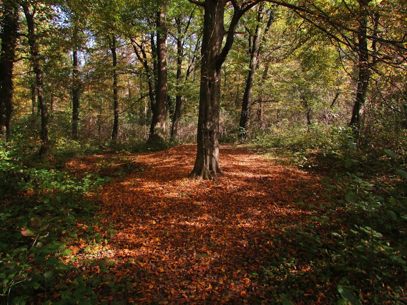
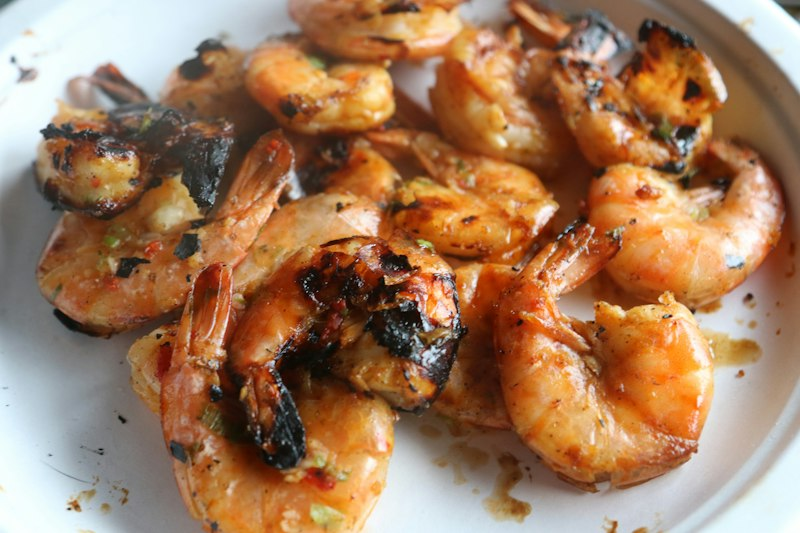
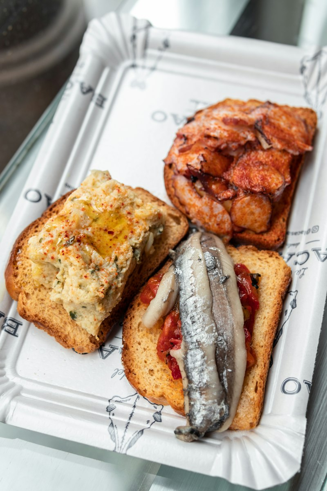
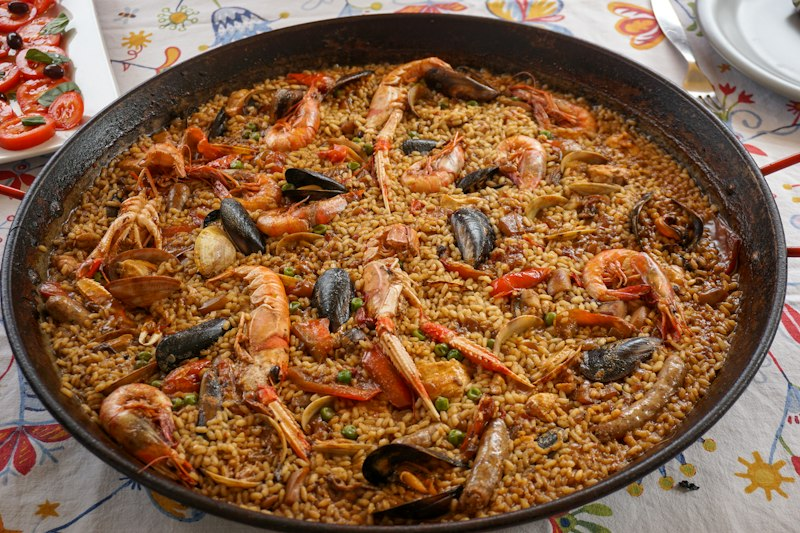
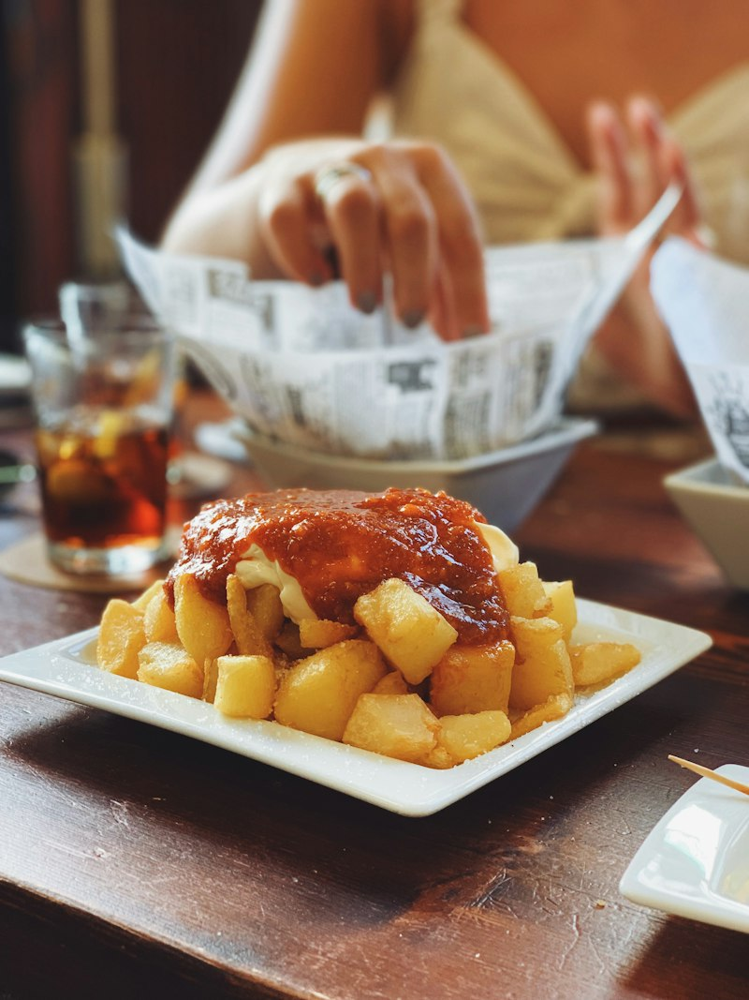

Ensalada O Carballo
Selección de vegetales frescos, atún y huevo cocido.
Fresh seasonal vegetables with tuna and boiled egg.
Sigüeiro · Camino Inglés
A dieciséis kilómetros de la catedral, en la última etapa del Camino Inglés, O Carballo Tapería sirve cocina casera de mercado desde primera hora de la mañana hasta bien entrada la noche.
La última etapa
El Camino Inglés llega a Santiago en su última etapa desde Sigüeiro: unos dieciséis kilómetros que cruzan el histórico Ponte do Tambre y una carballeira centenaria — la Fraga Encantada — antes de entrar en la ciudad. O Carballo Tapería, con el nombre gallego del propio roble, está justo al principio de ese último tramo.
O Carballo Tapería, junto al trazado del Camino Inglés.
El mismo puente medieval que sigue el Camino desde hace casi mil años.
Un bosque de carballos — robles — que da nombre a la casa.
La catedral, al final de la última etapa.

La carta
La carta real, completa, tal y como se sirve en sala — siete apartados, de la ensalada al postre. La cocina cambia según el mercado, así que algunos platos pueden variar de una semana a otra.
Selección de vegetales frescos, atún y huevo cocido.
Fresh seasonal vegetables with tuna and boiled egg.
Con cebolla caramelizada, nueces y pasas.
Warm goat cheese salad with caramelized onion, walnuts and raisins.
Con pimientos del piquillo y tomate cherry.
Tuna belly and Arzúa cheese salad with piquillo peppers.
Caseras, cremosas, hechas en la propia cocina.
Creamy Iberian ham croquettes.
Secreto ibérico a la plancha, con patatas de guarnición.
Grilled Iberian pork with potatoes.
Ternera gallega fileteada en la mesa, para compartir.
Sliced Galician beef steak.
200 gr de cerdo Duroc con queso de Arzúa y cebolla caramelizada.
O Carballo signature burger.
De temporada, a la brasa.
Grilled vegetables.
Hummus with crudités.
Creamy burrata with pesto and tomato jam.

Creamy shrimp croquettes.
Garlic prawns served in olive oil.
Grilled razor clams.
Grilled scallops.

Toasted rustic bread with ham and crushed tomato.
Galician pork belly toast with Arzúa cheese.

Creamy rice with Iberian pork and wild mushrooms.
Rice with octopus and prawns.
Black squid ink rice with mild alioli.
Creamy roasted vegetable rice with goat cheese.
Arroces para dos personas — consulta el tiempo de elaboración en sala.
Homemade cheesecake with red fruits.
Brownie with tangerine ice cream.
Chocolate mousse.
Yogurt with red fruit and honey.
Carta y precios reales, tal y como se sirven en sala; la cocina de mercado puede traer cambios puntuales.
Cocina de mercado
Tres ideas simples sostienen la cocina de O Carballo Tapería, sin necesitar más adorno que el propio producto.

Nada de fórmulas de cadena: croquetas, ensaladas y platos de cuchara pensados como en casa.
La compra se hace según lo que trae el mercado, no al revés — por eso la carta respira con el año.
Justo en el trazado del Camino Inglés — tan buena para peregrinos de paso como para quien vive en Sigüeiro.
Reseñas
Sin testimonios inventados: esta es la valoración real de la ficha de Google del negocio, tal y como aparece en Google Maps.
637 reseñas en Google. El negocio también ofrece:
"Vale la pena comer en este restaurante. Comimos unos arroces de pulpo y gambas, ensaladas y otras tapas variadas. Todo estaba muy bueno. A destacar la atención recibida por el personal. Lo recomiendo."
"Ambiente agradable, y la comida muy rica, pero lo mejor la atención de Mika, siempre con su sonrisa y amabilidad, una gran profesional, 100% recomendable. La tarta de queso riquísima!"
"Comida casera y espectacular, carta variada, atención inmejorable. Hemos venido a comer y todo estaba impresionante: las vieiras, el arroz con pulpo y qué decir de la tarta casera de queso. Impresionante."
Encuéntranos
Cocina: 13:00–16:00 y 21:00–23:30
¿Mesa para hoy o para el próximo tramo del Camino? Escríbenos.
Reservar por WhatsApp